Profile contact
This is information you choose to display to visitors. Leave a personal email off the public profile if you want to keep it private.
A GitHub profile is a public page where you can introduce yourself and show projects. Compare the examples, then follow the phases to build your own. The full profile build at the end follows Example 5. A separate visual walkthrough explains the three selected graphics in Example 3 and how they are added to its README.
These six examples show different ways to combine a clear identity, an introduction, project evidence, activity and links. Select an image to open a large, scrollable view. Example 1 is a third-party dashboard, not GitHub’s own profile page. Example 3 has a focused walkthrough of its graphics below. The full profile build at the end follows Example 5.
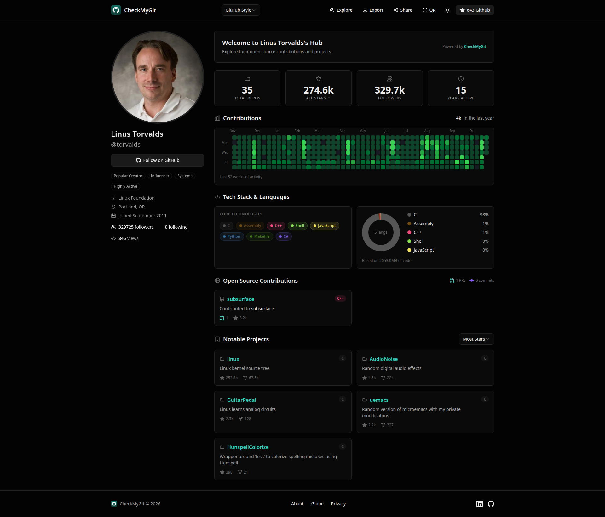
This is a third-party dashboard, not GitHub’s own profile page.
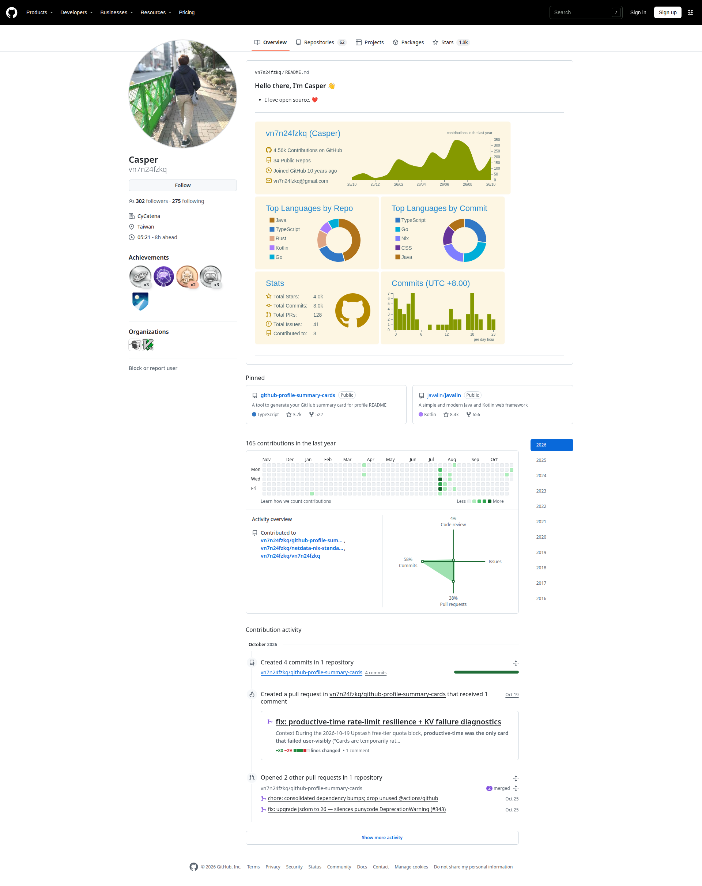
The page pairs a short introduction with visual activity and project links.
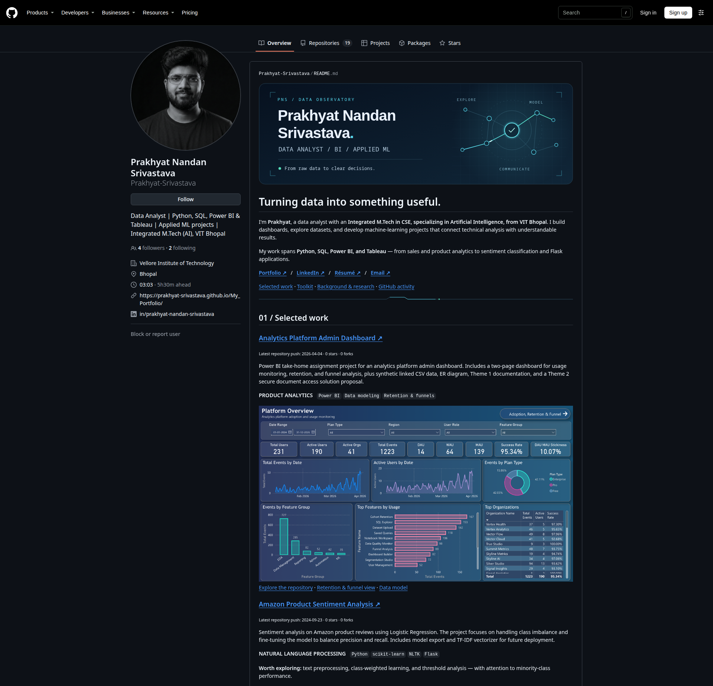
A short introduction leads into project evidence, tools and background.
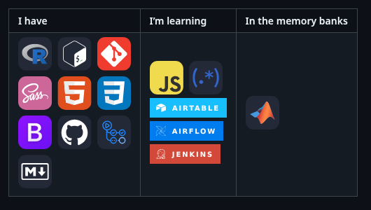
Two ways to add tool logos to a README.
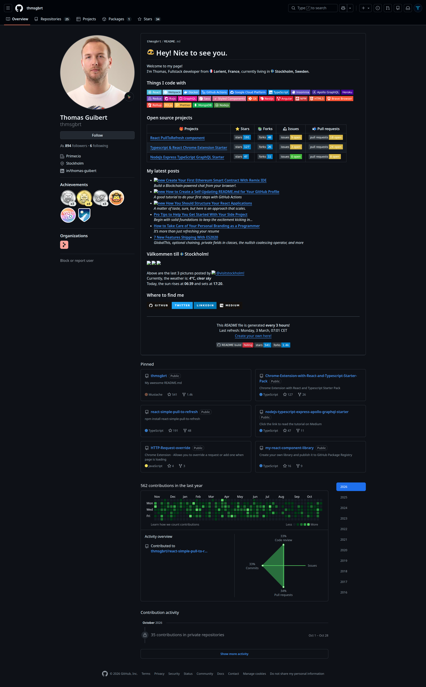
Links and descriptions help a visitor decide what to open next.
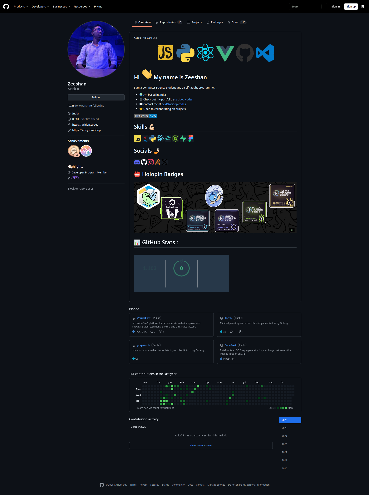
A banner and skills add personality; the first lines still explain who the person is.
Help visitors understand you quickly
Name, recognisable picture or avatar, and one clear line about your direction.
A short profile README explains your background and the kind of analysis you want to do.
Selected projects show questions, findings and tools you actually used.
Useful links make it obvious how to open a project or contact you.
You do not need every chart, badge or animated panel shown in these examples. Choose a style you can keep clear and maintain.
These details sit beside the profile README. Your name is required; the other fields are optional. Only add information you want visitors to see.
Adapt it to your real experience
Keep claims accurate. Only list tools you have used, and connect your previous career to skills you can explain.
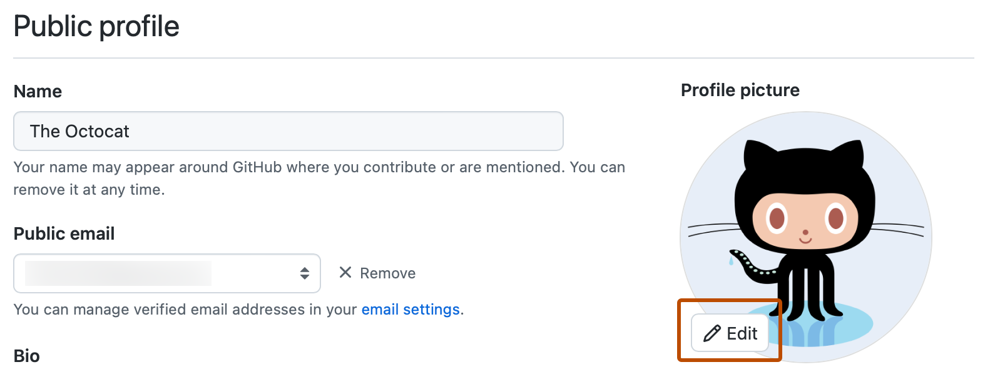
Button location · form illustration
After changing the fields above, scroll to the bottom of the Public profile form.
The button saves the form. It is not the same as the optional status control.
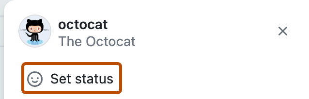
A README is a page of text that explains a project. A profile README sits near the top of your profile and introduces you to visitors. GitHub displays it when a public repository has the exact same name as your username and a non-empty README.md file at its top level.
https://github.com/amelia-dataREADME.md, choose the pencil Edit control, and replace the starter text with your own draft.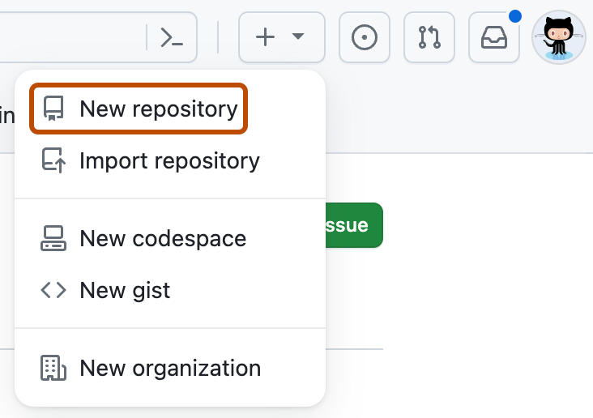
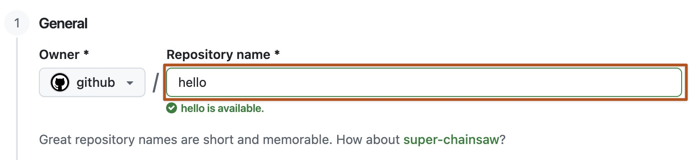
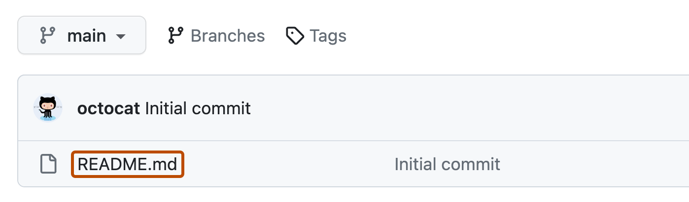
README.md in the repository file list.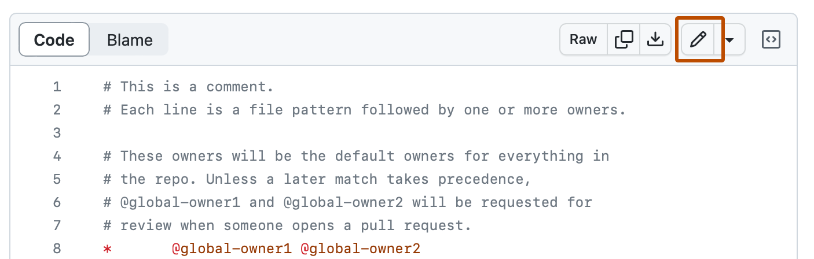
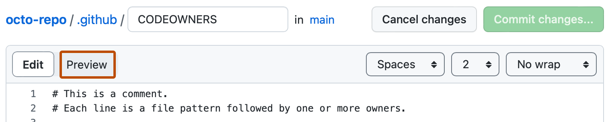
A commit saves a set of changes in the repository history. The next phase shows the Markdown marks that control the README's headings, links, tables, badges and images.
Once the repository exists, use Phase 4: Markdown design to build the page. The next step is not a special GitHub theme; it is a clear README made from Markdown.
Markdown is plain text with simple marks that GitHub turns into headings, emphasis, links, tables and images. It is the design language for the README area. It does not redesign GitHub's profile frame, tabs or sidebar.
# 👋 Hey! Nice to meet you
## Moving from [previous field] into data analytics
I use **Python, SQL and Power BI** to answer questions.
I bring *clear communication* from my previous work.
### Things I work with


### Selected data projects
| Project | Question | Evidence |
| --- | --- | --- |
| [Project name](repository-link) | [Question explored] | [Method and finding] |
### Recent posts
- [A useful post title](post-link)
### Project visuals

### Where to find me
[LinkedIn](your-link) · [Portfolio](your-link)I use Python, SQL and Power BI to answer questions. I bring clear communication from my previous work.
| Project | Question | Evidence |
|---|---|---|
| [Project name] | [Question explored] | [Method and finding] |
Use one main heading, then smaller section headings. A visitor can scan from your introduction to evidence and links.
A few relevant badges or one project chart add colour. Each should support a claim or explain the work.
Tables and badge rows can feel crowded on a phone. Keep tables short, or use a linked list instead.
# Main greeting ## Section ### Smaller section
One # makes the main heading. More marks make smaller section headings.
**important tool** *short note*
Use bold for a key phrase and italics sparingly. Most text should remain normal weight.
[Project README](https://...)
Use words that tell a visitor where the link goes, not “click here”.
- Python - SQL - Power BI
Use a short list when items do not need to be compared in columns.
| Project | Question | | --- | --- | | [Name](link) | [Question] |
Keep the table to a few useful columns. Use the Preview tab to check the result.

The words in brackets describe the image. The path points to an image stored in the repository.

A badge service can make a small labelled image. It is optional, external, and not proof of skill; link a real project that shows how you used the tool.
First short paragraph. Second short paragraph.
A blank line separates paragraphs and sections. A tidy page is easier to skim.
Write → Preview → Adjust
The source marks disappear in Preview. Check headings, links, table width and image paths there.
GitHub controls the surrounding profile page. Markdown styles the README with supported text formatting and embedded images. Do not rely on custom colours, fonts or layout code. A clear heading structure, one restrained badge row, a project table and a relevant chart are enough to create the Example 5 reading path.
For a badge row, use tools you have genuinely used and keep text or meaningful image descriptions for accessibility. If an external badge stops loading, replace it with a text list.
A pin is a project you feature near the top of your profile. GitHub allows up to six repositories and gists combined. Three well-explained projects are enough to start.
Not sure what to pin? An AI assistant can help compare your projects. If it can open links, share public repositories; otherwise paste their README text and short summaries. Try: I’m applying for entry-level data analyst roles in the UK. Compare these projects for relevance, clear explanations, evidence of my own work and variety. Recommend three to pin, explain why, and tell me what is unclear.
Treat the answer as a second opinion: choose projects you understand and can discuss. Never share passwords, keys, private data or access to private repositories.
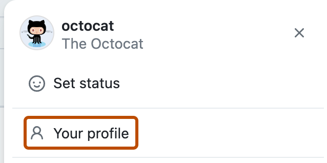
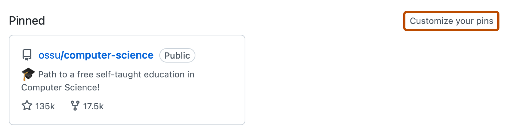
Prefer a project with a clear question, a readable README and a result you can explain. Do not pin an empty repository or an unchanged tutorial copy. If you built from a tutorial, explain what you changed and added.
A project repository is the project’s space on GitHub. GitHub shows its README on the repository’s main page. A short Description and relevant Topics in the About area help people decide whether to open the notebook, dashboard or code.
Question: How did advertised rents change across UK regions between 2019 and 2024?
Public monthly data, checked for missing months and inconsistent region names. I grouped the records by region and compared median rent over time.
One sentence with the project’s verified result and a link to the chart.
Explain what the dataset does not measure, then link to the notebook and a short guide to reproduce the analysis.
SQLPythonPower BIFor a non-technical reader: answer “What question did you ask, what did you find, and why might it matter?” Use ordinary words, explain chart labels and units, and state what the data cannot tell you. Do not make the reader decode code before they understand the point.
For a technical reader: show where the data came from, what checks or changes you made, how you reached the result, which tools you used, and where to find the notebook, query or dashboard. This lets them judge the method and follow your work.
Give them both paths: put a short plain-English summary first, then the method and files below it. The conclusion should stay consistent; the technical detail explains how you reached it.
Use numbers only when they come from your actual analysis. This example is a layout, not a claim about real rent data.
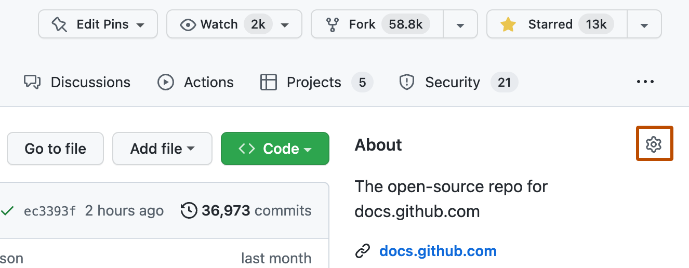
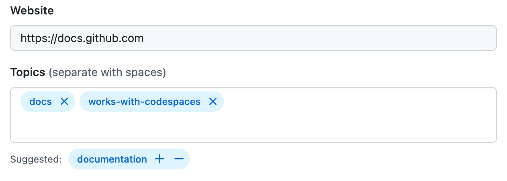
A profile can show how you work with other people, as well as the projects you build. A real issue, pull request and review can show that you can ask a clear question, explain a change, consider feedback and follow through. That gives a reviewer context beyond a list of commits. Hiring practices vary, and evidence for one universal recruiter checklist is thin, so treat collaboration as honest evidence of how you work, not a score to chase.
Show GitHub’s optional Activity overview. Example 5’s cross-shaped chart is generated by GitHub; you do not build it. On your profile, open Contribution settings above the contributions graph and select Activity overview. The Example 5 chart labels commits, code reviews, issues and pull requests. Use it as a snapshot of different kinds of activity, not a target to fill. See the full Example 5 profile.
Record a question, problem or task.
Propose a change so others can discuss it.
Give or receive feedback on the proposed change.
Explain what you changed after the feedback.
An issue tracks a question or task. A pull request proposes changes. A code review comments on those changes. If you have a real example, link it and explain what you noticed, what you did and how you responded.
For a group project, state each person's contribution in the project README. Do not claim another person's work as your own.
Never upload passwords, API keys, access tokens, private data or a .env file containing secrets. A .gitignore file tells Git which files to leave out. A blank .env.example can show the variable names without secret values.
Secret scanning checks for supported secret patterns, but it cannot catch everything. If a key is exposed, revoke or replace it immediately; deleting the file does not remove it from earlier saved changes.
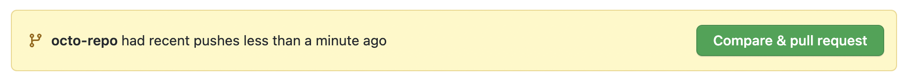
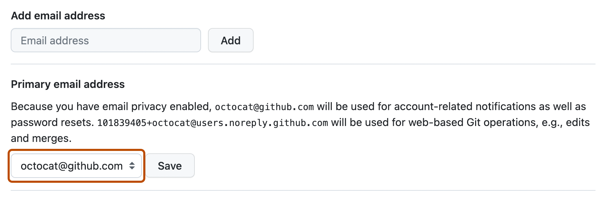
This is information you choose to display to visitors. Leave a personal email off the public profile if you want to keep it private.
A commit can include the email address used when it was saved. The privacy setting and GitHub no-reply address protect that address in future commits; they do not rewrite old ones.
GitHub has three different activity views. The contribution calendar is the grid of daily squares. Activity overview is a separate, optional section that summarises the kinds of contribution and repositories. The activity timeline lists individual events such as commits, pull requests and issues.
Each square represents a date. Its shade shows the amount of qualifying activity recorded for that day. It does not say what you did or how good the work was.
The spider-shaped chart shows a mix of contribution types and active repositories. The picture here is an illustration; GitHub fills in your own activity.
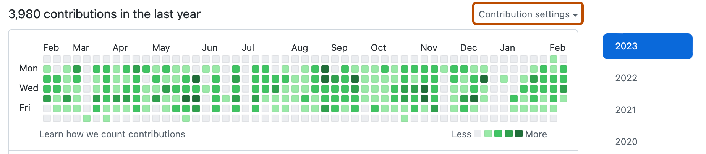
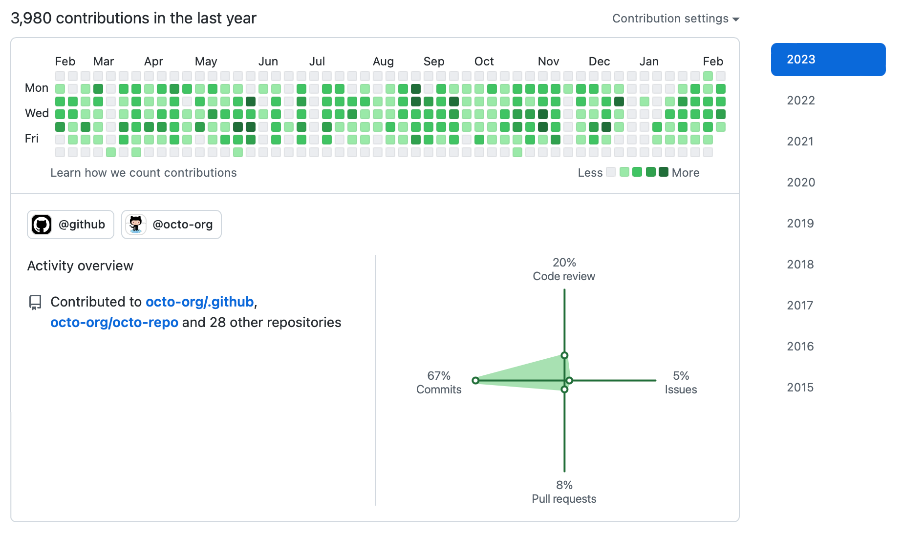
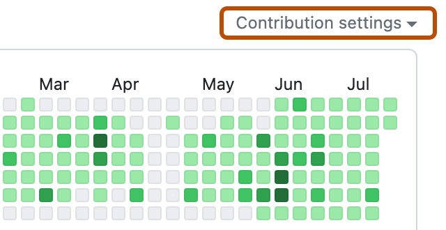
Creating a repository and forking one always count on the contribution graph. Issues, proposed pull requests, submitted pull-request reviews, discussions and commits count only when they meet GitHub's criteria.
gh-pages branch of a standalone repository. At least one of these must also be true: you are a collaborator or organisation member, you forked the repository, or you opened an issue or pull request there.The graph is an activity record, not a measure of data skill or job readiness. Your project README explains what you can do.
This crop stops after the Amazon Product Sentiment Analysis entry. Below it, each graphic is shown separately so you can see what it is and how it appears in a README.
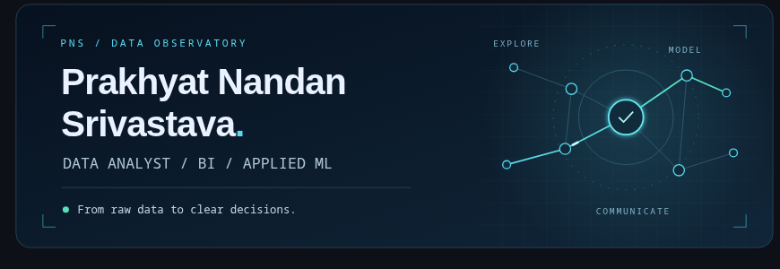
The source profile stores the banner as assets/header.svg. SVG artwork is made from shapes and text, so it stays sharp when resized. The README displays that file; GitHub does not create the banner. The source does not identify the design app used.
Example 3 also supplies a still SVG for people who prefer reduced motion. A beginner can start with one still banner, or leave it out.
<picture>
<source media="(prefers-reduced-motion: reduce)" srcset="assets/header-static.svg">
<img src="assets/header.svg" alt="A short description of the banner">
</picture>Make or commission an SVG, upload it into an assets folder in the profile repository, and point the README at that exact filename. See the actual banner file.
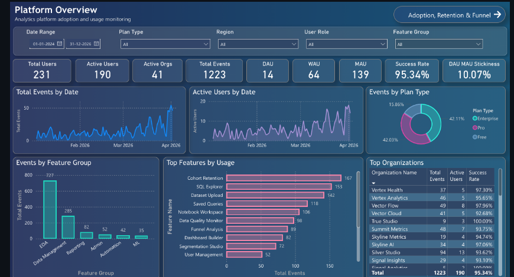
The picture is a PNG stored in the project repository at images/platform_overview.png. The profile README loads the raw image file and wraps it in a link to the project. The source confirms it is a Power BI dashboard preview, but does not document the exact export action.
Export one clear view from your project, upload it to that project repository, then link the image to the project page:
[](https://github.com/your-name/your-project)Replace both example addresses with yours. Check that the image contains no private data. See the PNG used in Example 3.
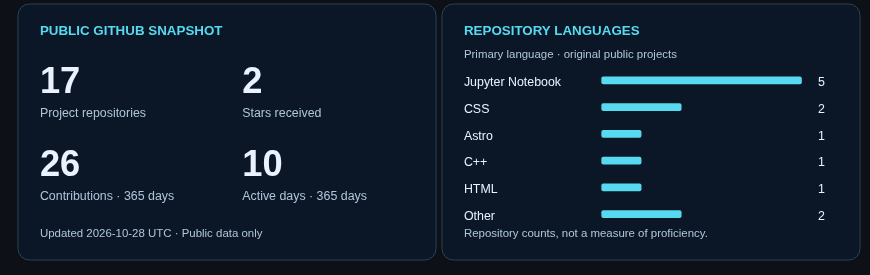
These are not standard GitHub profile widgets. The README displays assets/stats.svg and assets/languages.svg. A Python script builds them from public GitHub data, and a scheduled GitHub Actions workflow refreshes the files. The language card counts repositories; it does not measure skill.
<img src="assets/stats.svg" width="420" alt="Public GitHub activity summary">
<img src="assets/languages.svg" width="420" alt="Languages used across public repositories">Making the generated cards also requires the script and workflow. That is optional advanced work. Start with a real project image if you are new to profile READMEs. See the generator · See the scheduled workflow.
Example 4 uses two image services for its Skills and IDE/GUI sections. These are just the icons and badges; this is not a second profile build.
<img> tag in your profile README. This short HTML instruction tells the page where the image is. For example:<img src="https://skillicons.dev/icons?i=r,bash,git,html,css&perline=5" alt="R, Bash, Git, HTML and CSS">
<img src="https://img.shields.io/badge/RStudio-75AADB?style=for-the-badge&logo=RStudio&logoColor=white" alt="RStudio">Change the tool names to match your experience. Save the README and use Preview to check that each image loads. The icons can disappear if the external service or URL changes, so keep the row short. For image placement and alt text, see Markdown design.
This build follows the actual Example 5 layout: profile identity at the left; a welcome and short introduction; tool badges; a project table; recent posts; project visuals; and contact links. Each step below creates one of those visible parts.
What the screenshot contains: the left-hand identity panel is made with GitHub's normal profile settings. The larger right-hand area is a profile README. The README is where Markdown builds the greeting, tool badge row, project table, post list, visual panel and links. We are adapting the content for a data graduate; do not copy someone else's results, counts or claims.
One line about your move into data analytics and one line about the work you want to show.
| Project | Question | Evidence |
|---|---|---|
| [Linked project] | [Question] | [Method + finding] |
• [One real post or learning note linked to its page]
[LinkedIn] · [Portfolio] · [CV]
Before you start: choose one or two real project repositories, collect their links, pick tools you have actually used, and select one chart or dashboard image that you are allowed to share. If you do not have a post or useful second image, leave that part out.
Follow Phase 2 for the profile picture, name, short bio, location and links. These controls are part of GitHub's profile page; they are not README Markdown.
Use one clear bio line to connect previous experience with your new direction. Do not repeat your whole CV in the sidebar.
In README.md, use Markdown to create a friendly main heading, a smaller introduction heading and two or three short lines. The preview below shows how GitHub turns that source into your profile introduction.
# 👋 Hey! Nice to meet you
## Moving from [previous field] into data analytics
I use **Python, SQL and Power BI** to answer [type of question].
I bring *[transferable strength]* from my previous work.I use Python, SQL and Power BI to answer [type of question].
I bring [transferable strength] from my previous work.
Replace every bracketed prompt with something true about you. A single # becomes the main heading; ## becomes a smaller heading. **text** becomes bold and *text* becomes italic. The preview shows those changes. For the full explanation, see Phase 4: Markdown design.
The reference uses badge images. A badge is a small image with a label. In Markdown it uses the same image syntax explained in Phase 4. Keep the row short and connect each tool to a project below.
### Things I work with


These external badges may stop loading. A plain text list is a good fallback. Never use a badge to claim a skill you cannot show.
Give each project a link, an understandable question and a short evidence statement. This adapts the screenshot's project table for data roles: a hiring reader needs to see what you investigated and what you did, not a copied star count.
### Selected data projects
| Project | Question | Evidence |
| --- | --- | --- |
| [Project name](repository-link) | [Question explored] | [Method and finding] |
| [Project name](repository-link) | [Question explored] | [Method and finding] |Use two or three columns. On a narrow screen, preview the table; if it is cramped, replace it with a short linked list.
The reference lists recent posts. Use this section for a real article, project write-up or learning note. If you have none yet, remove the heading rather than inventing posts.
### Recent posts
- [A useful title](link-to-the-post)
- [Another useful title](link-to-the-post)Put the link name in square brackets and the destination in round brackets.
Use one or two charts, dashboard crops or project screenshots that help explain your work. Remove personal data and check that the image is readable before uploading it.
images/.
Use an image path relative to the profile README repository:
### Project visuals
![Chart comparing [measure] across [groups]](images/project-chart.png)The alt text in square brackets describes the chart to someone who cannot see it. Replace the example file name with the exact file you uploaded.
Finish with links a visitor can use. Then open Preview and check each section in order: greeting → tools → projects → posts → visuals → contact. Fix broken paths, remove empty sections and check that the text still makes sense without the images.
### Where to find me
[LinkedIn](your-link) · [Portfolio](your-link)Save the README, open your public profile, and compare it with the map above. Use Phase 5 to pin the repositories linked in your table.
Copy this structure into your profile README and replace or remove every bracketed prompt. Add only project links, posts and images that exist and that you can explain.
# 👋 Hey! Nice to meet you
## Moving from [previous field] into data analytics
I use **Python, SQL and Power BI** to answer real questions.
### Things I work with


### Selected data projects
| Project | Question | Evidence |
| --- | --- | --- |
| [Project name](project-repository-link) | [Question explored] | [Method and finding] |
### Recent posts
- [Post title](post-link)
### Project visuals

### Where to find me
[LinkedIn](your-link) · [Portfolio](your-link)GitHub features and screenshots checked against GitHub Docs on 28 October 2026. The linked UK sources describe role skills and careers advice; evidence about a universal recruiter profile check is thin.
GitHub Docs screenshots in this guide are reproduced unmodified from GitHub Docs assets, licensed by the GitHub Docs repository under Creative Commons Attribution 4.0. Credit: GitHub Docs, github/docs. Profile examples 1, 2 and 6 are full-page browser captures from the linked public pages, made on 28 October 2026. Example 3 is cropped after its Amazon Product Sentiment Analysis entry; Example 4 shows only its coding-icon and IDE-badge areas. Example 4’s README source and linked assets were checked on 29 October 2026: its skill and badge images are remote SVGs, and its post timeline is a repository PNG. Example 5 uses the high-resolution Thomas Guibert screenshot supplied for this guide. Example 1 is a CheckMyGit dashboard, not GitHub’s own profile view. Example 3 replaces the unavailable Miraya Tech profile with a current data-analyst profile; the archived Miraya page is listed above. Markdown and project examples use placeholders; replace them with your own verified work.